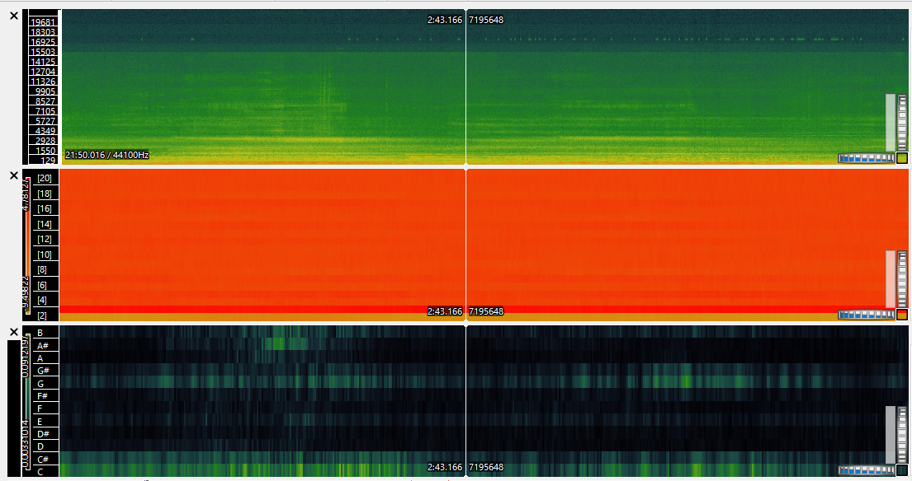
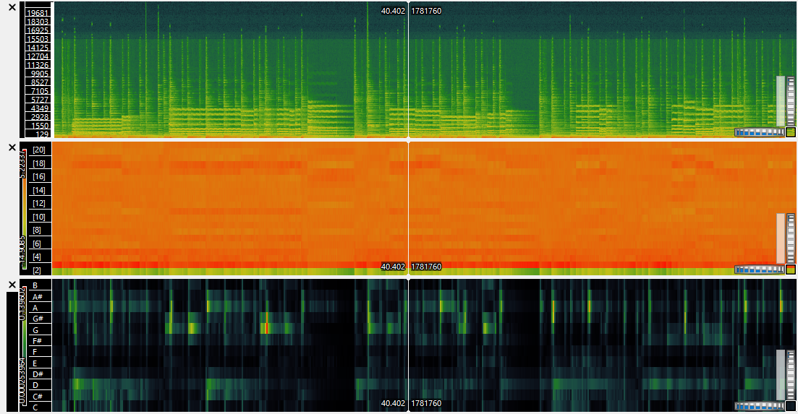

| Week 1 | Week 2 | Week 3 | Week 4 | Week 5 | Week 7 | Week 8 | Week 9 | Week 10 |
On Sonic Visualiser, I extracted the spectograms, Mel Frequency CepstralCoefficients and Chromgrams of my three music tracks. Below are images of the panes. Also, please click on the audio files to hear a sample of them!